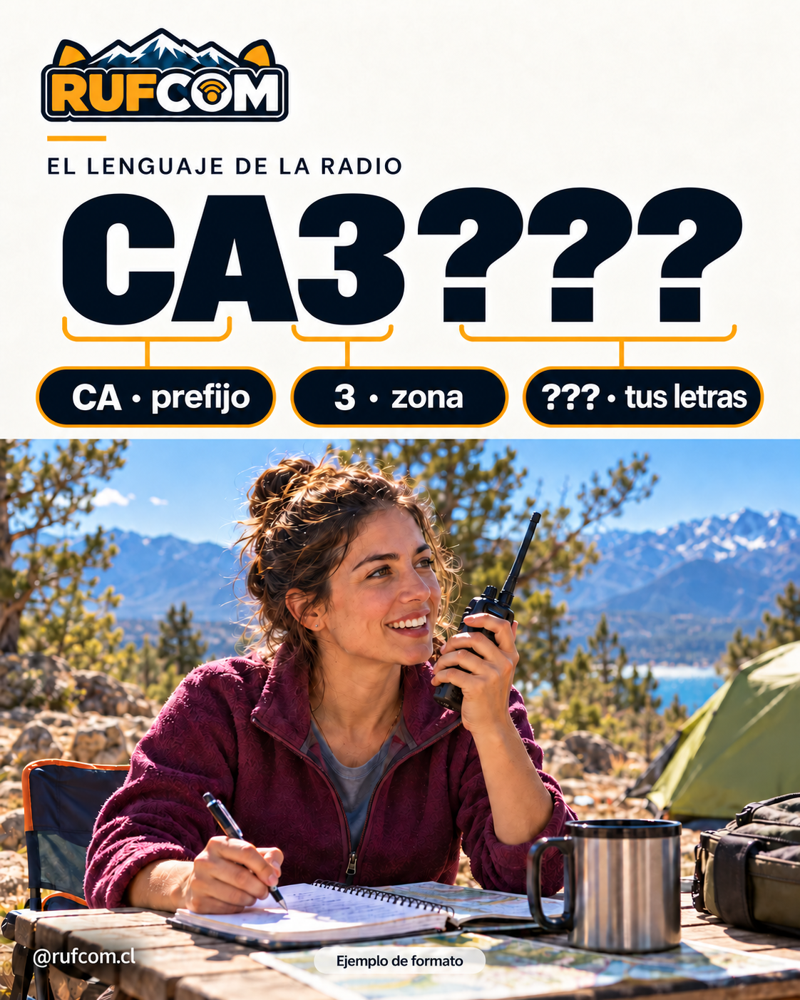
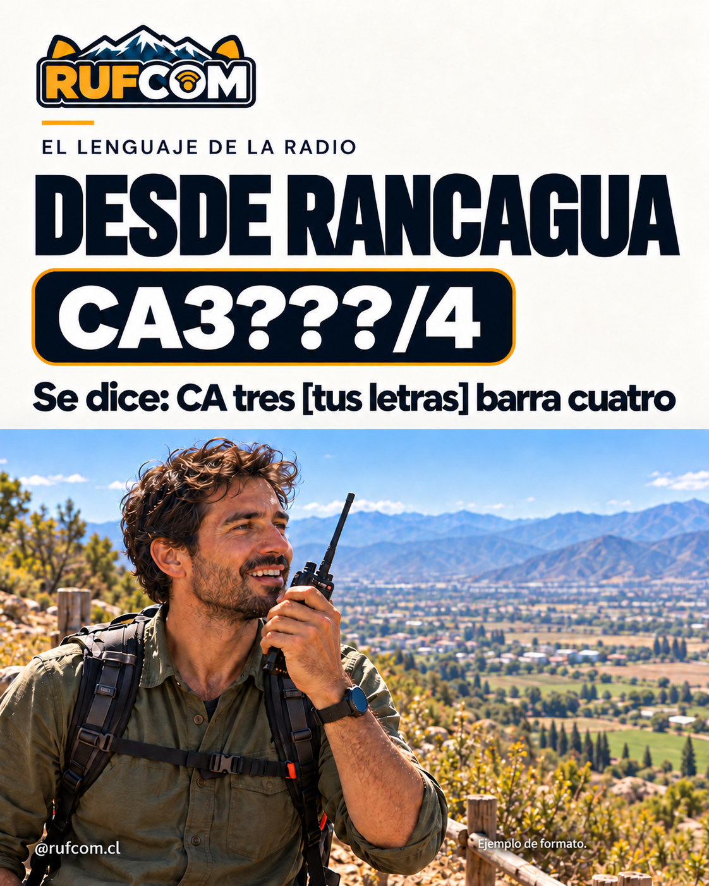
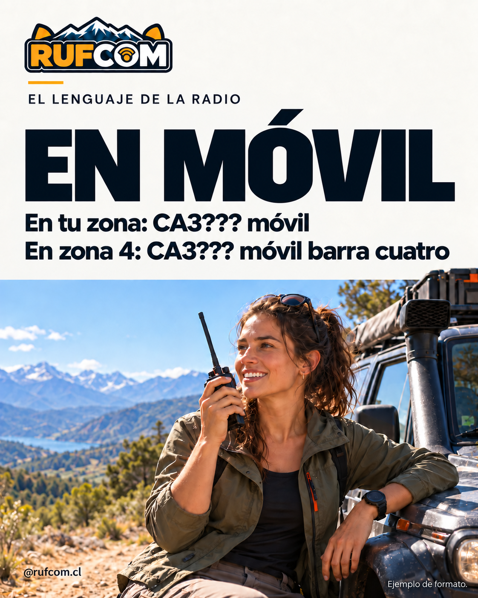

Ejemplo didáctico: CA3??? es un ejemplo de formato. Reemplaza ??? por las letras de tu indicativo. Tu indicativo es único en el mundo. Usa siempre el que te asignó SUBTEL.
Las partes de tu indicativo

En CA3???, CA es el prefijo, 3 identifica la zona y ??? representa las letras del sufijo. Santiago pertenece a la zona 3, pero vivir allí no significa que todas las licencias tengan el prefijo CA: usa siempre tu distintivo asignado. Los distintivos de aspirantes también incluyen la zona: CD + número de zona geográfica + tres letras. Por ejemplo, CD3??? ilustra el formato de un aspirante de zona 3; usa siempre el indicativo que te asignó SUBTEL.
Viajas a otra zona

CA3??? opera desde Rancagua: «CA tres [tus letras] barra cuatro» → CA3???/4.
Conserva CA3???; no lo cambies por CA4???.
Operas en móvil

Móvil terrestre en la zona 3: «CA3??? móvil».
Móvil terrestre en la zona 4: «CA3??? móvil barra cuatro».
La norma distingue móvil terrestre, móvil marítima y móvil aérea. Tener un handy no determina por sí solo que la estación sea móvil.
Las zonas de Chile
La siguiente tabla conserva los territorios y nombres de la norma de 2001. Las zonas de radio no equivalen a la numeración de las regiones actuales; algunos nombres y divisiones administrativas cambiaron después.
| Zona | Territorio |
|---|---|
| 1 | Tarapacá, Antofagasta y Atacama |
| 2 | Coquimbo y Valparaíso, con las excepciones insulares de zona 0 |
| 3 | Región Metropolitana |
| 4 | O’Higgins, Maule y provincia de Ñuble |
| 5 | Provincias de Concepción, Arauco y Biobío |
| 6 | Araucanía y provincias de Valdivia y Osorno |
| 7 | Provincias de Llanquihue, Chiloé y Palena, y región de Aysén |
| 8 | Magallanes |
| 9 | Territorio Antártico Chileno |
| 0 | Rapa Nui, Sala y Gómez, San Félix, San Ambrosio y Juan Fernández; estaciones espaciales |
Identifícate con claridad
Anuncia el distintivo completo al comenzar y terminar cada transmisión y, en cualquier caso, a intervalos no mayores de quince minutos. Al viajar agrega la zona de destino cuando sea distinta de la tuya.
Ejercicio: CA3??? transmite en móvil desde Talca. ¿Cómo se anuncia?
«CA3??? móvil barra cuatro». Talca está en Maule, zona 4.